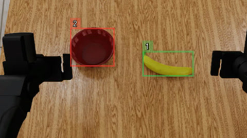
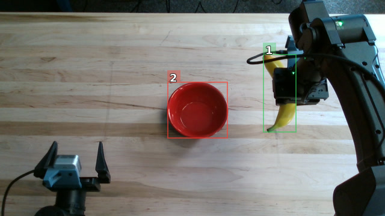
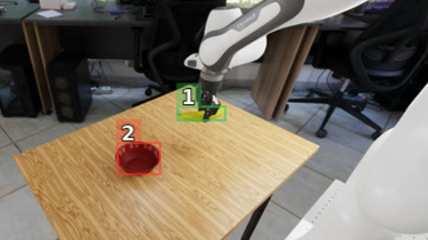

Zero-real Agent Policy (ZAP)
A 27B open model trained only in simulation beats SOTA VLAs & matches GPT-6 Astra on a real bimanual robot. It is 3× faster and 17× cheaper per task, with zero real-world training data, is as steerable as an LLM, and generalizes to new objects, tasks, and strategies.
Introduction
Frontier-style reasoning at the cost of a VLA
A robot policy has to do two hard things at once: understand what it is being asked to do in a scene it may never have seen, and turn that understanding into precise physical motion. Today's approaches tend to be good at one of these and pay for it in the other. The current landscape of robot policy models broadly falls into three groups:
- Dedicated models that directly output robot actions (vision-language-action models, or VLAs, and world-action models, or WAMs) [1, 2, 3, 4]. These have shown promising results, but they have real downsides. Most notably, because diverse action data is scarce, they often generalize poorly to different prompt, task, scene and goal distributions. Additionally, teaching them a new task usually means collecting new demonstrations and training again.
- Code that directly drives the robot (Code-as-a-Policy) [5, 6]. This runs quickly and reliably when the situations it will face can be anticipated when the program is written, but it struggles to handle cases outside that script, such as an unexpected failure, an unfamiliar object or an ambiguous instruction. Adapting to a new task or scene means rewriting the program.
- Large frontier LLMs controlling the robot through tools and a harness (Large Agent-as-a-Policy) [7, 8, 9]. These inherit all the generalization, understanding and reasoning capabilities of LLMs. However, trillion-parameter models are slow and cost dollars for a task that smaller policy models, when they can do it, do in seconds and for pennies.
We propose Zero-real Agent Policy (ZAP): training a smaller LLM exclusively on simulation data, so that it keeps the reasoning and generalization advantages of frontier LLMs at the cost and speed of VLAs and WAMs.
| Approach | Speed | Cost | Generalization |
|---|---|---|---|
| VLAs / WAMs | Yes | Yes | No |
| Code-as-a-Policy | Yes | Yes | No |
| Large Agent-as-a-Policy | No | No | Yes |
| ZAP (Zero-real Agent Policy) | Yes | Yes | Yes |
What we did
We train a small LLM to control a two-armed robot dynamically, through tool calls. On every turn it looks at fresh camera images and the robot's measured state, decides on the next step, and calls a tool: move an arm to a pose, open or close a gripper, change what perception looks for, or update its plan. It does not write a program that then runs blind. Because it decides again after every action, it can notice when a grasp slips or an object moves, and adjust.
We train in three stages, all in simulation, on 40 tasks for bimanual YAM arms. First, a short GRPO [10] warm-up run on base Qwen 3.6 27B [11] collects successful episodes. Next, we fine-tune (SFT) the base model on these mined traces to get a stronger starting checkpoint. Finally, the main GRPO run trains from that checkpoint with dense reward shaping. The model never sees any real-world robot data, whether teleoperation, demonstrations or real rollouts.
On real-world tasks ranging from pick and place to more complicated object manipulation and reasoning, on bimanual YAM arms, ZAP matches GPT-6 Astra's [12] performance while being 3× faster and 17× cheaper. It also works zero-shot on tasks, objects, scenes and goals that appear nowhere in training, which we show in the sections below. The same model also transfers to a robot it never trained on, a single-arm Franka, where it beats the leading VLAs on Robolab-120 [13].
Real-world results
Parity with GPT-6 Astra on real hardware
The real test of a simulation-trained policy is what happens when it meets real cameras, real lighting and real objects. We selected 10 tasks of varying complexity from the Robolab-120 task list, none of which the model trained on, and ran 3 trials each. We ran them on our bimanual YAM rig [14], two 6-DoF YAM Ultra arms, each with a parallel-jaw gripper, with the same three cameras as in simulation.
ZAP matches GPT-6 Astra running in the same harness: both succeed on 97% of trials. Both clearly outperform Astra in the Robocurve harness [8, 15] and MolmoAct2 [1], a prominent public VLA for bimanual YAM arms, as well as the base Qwen 3.6 27B we started from. The base model has the same reasoning and the same harness, but no motion training, and succeeds on only 17% of trials.
Show per-task results (3 trials per task)
3× faster and 17× cheaper
Matching a frontier model is only useful if the policy is also practical to run. Here the smaller model pays off twice. ZAP completes tasks 3× faster than GPT-6 Astra: on average 146 seconds versus 397 seconds. Both models solve tasks in a comparable number of turns, so the difference comes almost entirely from how long each turn takes, 6.2 seconds for our model against 19 seconds for Astra. For much of that time the robot sits still, waiting for the model to decide.
The cost gap is larger still. Astra is expensive, costing $4.87 per task on average, while our model costs an estimated $0.29 per task when served at the rental price of a B300 GPU. Below, both models tackle the same task, putting a white cup in the center of the table, side by side. The timers show real-world time, and the counters spread each model's average cost per task over its episode.
| ZAP | GPT-6 Astra | |
|---|---|---|
| Total time to solve a task | 146 ± 83 s | 397 ± 159 s |
| Turns taken | 21.9 ± 10.9 | 19.4 ± 8.0 |
| Time per turn | 6.2 ± 4.5 s | 19.0 ± 8.6 s |
| Cost per task | $0.29 ± $0.16 | $4.87 ± $3.03 |
Generalization
New objects, new goals
What we find most exciting is that training only on simulated pick-and-place and stacking tasks carries over to a wide range of harder real-world tasks. The same model handles objects it never saw, goals it was never given, and kinds of manipulation it never practiced.
For example, we ask the agent to place a test tube in a test tube rack. Both objects are new to it, and so is the goal. The agent works out how to pick up the tube, turns the gripper so the tube is vertical, and seats the tube in a hole. This task is particularly challenging because, at the moment of placement, the hole is completely hidden from the agent's cameras.
Steered by the prompt
A VLA's behavior is tightly tied to its training distribution, so changing what you ask for often changes little about what it does [17]. Our policy is a language model, and it inherits the language steerability of one: change the instruction and the strategy changes with it. Figure 4 used the default prompt, which lets the model pick any hole. Below, we ask it to place the tube in a hole at the top left of the rack instead.
A bimanual handoff it never trained on
We push this further by asking for a completely different strategy: hand the test tube from one arm to the other in mid-air, then place it in the rack. The prompt describes the handoff in writing, but training contains no bimanual interaction even close to a handoff.
Even so, the model carries out the whole sequence. Getting it right means timing the two grippers against each other: if the giving arm lets go too early the tube falls, and if the receiving arm comes in too low the two grippers collide.
In this episode the model:
- Turns the tube so it points the right way, cap up.
- Brings the left arm, holding the tube, to the middle of the table, above the rack.
- Brings the right arm over the tube and descends from above, just far enough to grasp the cap but not so low that it hits the left arm.
- Closes the right gripper, then opens the left one.
- Moves the left arm out of the way.
- Lowers the tube into a hole in the rack.
Advanced Reasoning
Not only can the model manipulate new objects to reach new goals, it can also reason about what a goal means. We ask it to draw an X in the center of a tic-tac-toe board. This is a new task, and it requires reasoning about two things: what a tic-tac-toe board is and where the X should go, and how to draw on a board with a marker.
The second is harder than it sounds. The model has to keep enough contact to leave a line throughout each stroke, without pressing so hard that it breaks or dislodges the marker. It does this with the same move and gripper tools it learned on pick-and-place tasks.
We also ask the model to make the winning move in a chess position. This again requires precise manipulation of an object, in a scene it has never seen: chess pieces are small, light and top-heavy, and tip over easily if grasped badly. It also requires reasoning about the rules and strategy of chess itself, to find the one move that delivers checkmate.
None of these objects, scenes or goals appear in training, and neither does drawing, a mid-air handoff or board-game reasoning. The agent brings its understanding of the world from its own pre- and post-training; simulation only had to teach it how to move the robot. That combination is what lets simple simulated tasks translate into this range of real-world behavior.
Simulation and a new robot
Robolab-120 on the bimanual YAM
We also evaluate in simulation, on Robolab-120 adapted to our bimanual YAM arms. None of its 120 tasks are in our training set. Fine-tuning on mined traces raises success from the base model's 8% to 58%, and RL raises it to 74%, above both GPT-6 Astra and Opus 5.5.
With the same harness, the base Qwen model fails on almost every task. Looking at its thinking, it clearly understands the scene and the goal. What it lacks is the ability to move the robot: it picks the wrong grasp orientation and height, approaches objects badly, and struggles to turn 3D perception into motion commands. Training adds exactly this missing skill.
A new robot for free
We then take the same checkpoint, trained only on two YAM arms, and run it on a single-arm Franka. From the agent's point of view, only the system prompt describing the robot changes; the harness stays exactly the same. The Franka differs from the YAM in most of the ways that matter to a policy that outputs joint angles or action chunks: one arm instead of two, seven joints instead of six, a different gripper, different reach and different cameras.
Our model is unaffected by these differences, because it commands end-effector poses and the harness handles the joints. On Robolab-120 it reaches 56%, ahead of Lakeside and FLUX 3 Action [18], the leading VLA and WAM policies on the current leaderboard [19]. What the model learned in simulation is not a mapping tied to the YAM arms, but how to move a gripper through space to get an object where it needs to go.
Ablations
- Better fine-tuning data. Fine-tuning on 455 successful traces mined early in GRPO reaches 17.2% on Robolab-120. Fine-tuning on 3.9k traces mined from a longer run, especially on the harder tasks, reaches 58.3%. Same recipe, better data.
- Training directly on a Franka. We also train a smaller Qwen 3.5 9B on single-arm Franka tasks [20], none of which appear in Robolab-120, with a lighter version of the same recipe: fine-tuning on 4.6k mined traces, then GRPO. It reaches 53.4% on Robolab-120, also ahead of Lakeside (51.0%) and FLUX 3 Action (42.9%).
How it works
The model acts only through tools
ZAP acts only through tools. It sees camera images and the robot's measured state, then commands absolute end-effector poses and gripper openings. A motion controller turns each pose into joint commands and reports back. Everything robot-specific (joints, cameras, workspace limits) lives in a declarative description, so the same harness runs on the simulated YAM, the real YAM and a Franka it never trained on.

head + 2 wrist cameras

overhead + 2 wrist cameras

2 overview + 1 wrist camera
- Observe
"red bowl"#2 conf=0.942 … surface_centroid=<0.584,0.135,0.026> … top_z=0.058- Act
move_to(arm: x=0.584, y=0.135, z=0.18, slot_yaw=245, tilt=0)- Result
controller-reached, … TCP off-target 3mm, … rot-off 0degor short, incomplete, not attempted, unknown
The harness has five tools. There are no grasp macros or approach primitives. In earlier versions, such macros raised success on the objects they were designed around but got in the way on everything else.
| Tool | Effect |
|---|---|
move_to | Moves one or both arms to a complete end-effector pose. |
set_gripper | Sets each jaw opening, from 0 (closed) to 1 (fully open). |
change_query | Sets the text descriptions of the objects that perception segments. |
update_todo | Writes a short plan that is repeated in every later observation, so it survives when old turns are dropped from context. |
done | Ends the episode. |
move_to and set_gripper calls the model plans itself. Invalid calls are refused, with the reason given to the model.Orientation
Orientation is given by three angles, each measured counterclockwise from world +x:
- Slot yaw ψ is the heading of the jaw slot, the axis a held object lies along between the fingers. It is set along the object to be grasped.
- Tilt τ is the angle of the tool axis from straight down: 0° is top-down and 90° is horizontal. It chooses between a top-down and a side approach.
- Tilt direction ϕ is the compass direction the fingertips tip toward. It picks the side the tool comes in from.
Why not Euler angles or quaternions?
We use these instead of Euler angles or quaternions for two reasons. Neither of those states directly where the gripper points or how its jaws are aligned, the two quantities that decide a grasp. And a horizontal tool, as in a side grasp, lies at an Euler singularity, where a few degrees of physical error can show up as a change of about 100° in the reported angles. Our angles are ambiguous only when the tool points straight down or straight up, where tilt direction has no physical meaning.
What the model sees
At every turn the model sees each camera's image, perception results, and the state of the robot.
Perception uses SAM 3.1 [21, 22], which runs continuously and asynchronously in the background on every camera stream rather than as a tool the model calls and waits on. The model controls perception only through change_query, which it can call at any time, for example to find a missed object or to segment part of one, such as the cap of a tube. Detections are not fused across cameras; the model decides which ones refer to the same object.
Inside one real episode
To make this concrete, you can step through a real-rig episode turn by turn: what the model saw, what it thought, the tool call it made, and the report it got back.
How we trained it
The harness above works very well with frontier models like GPT-6 Astra. But it demands knowing how to translate physical-world understanding into actual motion control, which is difficult for off-the-shelf smaller models. On our real rig, base Qwen 3.6 27B succeeded on only 17% of trials. Below we describe how we closed that gap. We never introduce any real-world action or teleoperation data; all learning is performed in simulation.
Reinforcement learning with dense reward
We train with GRPO [10] on all 40 tasks, starting from a fine-tuned checkpoint described below. The 40 simulated tasks, such as pick and place and stacking, are deliberately simple, and none requires heavy reasoning.
The simulator knows exactly where every object is, so success can be checked automatically. But some tasks start with zero successes for both the base model and our fine-tuned model. On those, a pass/fail reward gives no signal at all: if every attempt fails, there is nothing to prefer. We instead give the model a dense ladder of partial credit to climb, designed per task type. For example, for a pick-and-place task, the model earns credit for approaching the object, for grasping and lifting it, and for carrying it toward the goal, each in proportion to how far it got.
We found it crucial that completing the task is rewarded far more than any intermediate step. Otherwise the model can settle for reliably collecting partial credit instead of finishing. Credit is judged on the final state of the scene, and multi-object tasks scale each object's reward so the total stays in the same range as a single-object task. The success checker is hardened against reward hacking, for example by requiring that the goal hold for at least half a second.
More on the RL setup
- GRPO in the style of prime-rl [23] and Dr. GRPO [24]: no standard-deviation normalization and no per-sequence length normalization.
- Turns without a tool call, and turns whose motion command fails validation, get a negative advantage regardless of the episode's score. Only those turns are penalized, not the whole episode. In earlier runs without these penalties, the two error rates reached 4% and 34%; with them, they fall to 0% and 3%.
- Batch size, LoRA rank, episode length and the other settings are listed under Hyperparameters in the appendix.
Seeding the model with its own successes
A model that already covers the task space well is much easier to improve with RL, so we first fine-tune on successful agent traces. That raises the question of how to collect them. One option is rejection sampling from a fixed base Qwen 3.6 27B or a larger open model. But this is prohibitively inefficient, and many tasks never succeed even after hundreds of samples per task.
Instead, starting from the off-the-shelf Qwen 3.6 27B, we run a short GRPO warm-up as described above, oversample the harder tasks, and mine its successful rollouts for fine-tuning. As the policy improves, tasks beyond the base model's initial abilities begin to yield successes. This creates a self-distillation loop that is close to on-policy: the model learns from a slightly evolved version of itself.
Even so, some tasks never produce a single successful rollout. For these we use a prefix-tree search. A tree node is created only after a physical action, a move, grasp or release, finishes and the scene settles; perception and reasoning calls are kept as evidence on the current node. To expand a node, we reset the simulator to the task's deterministic starting scene, replay that node's stored low-level actions to get back to the same physical state, restore the agent's context, and sample a new continuation from a fresh observation. The next node to expand is chosen by a best-first rule that balances exploitation and exploration: it favors nodes with high dense progress reward, adds a bonus for nodes that have been explored less, and prunes branches that keep failing. This found successful traces for several tasks that targeted RL sampling never solved.
Failures
Where it still slips
The model is not perfect on these new tasks, and its failures are informative. Below are two examples where it gets most of a task right but fails on one part of it.
In the second, the model must sort fruit into bins by color: orange on the left, yellow in the middle, red on the right. It reasons correctly about color, location and manipulation, and moves most of the fruit to the right place. However, it misses the last remaining red fruit in the left bin, possibly because of the bin's shadow.
What didn't work
Several choices in this report came from trying the obvious thing first. These are the ones we would most want to know about if we were starting again.
- Grasp macros. Relative moves and approach primitives raised the floor but capped the ceiling. We removed them and let the model plan each phase.
- Euler angles and quaternions. Side grasps sit near the Euler singularity, so small errors looked large. Slot yaw, tilt and tilt direction fixed this.
- Binary reward. On tasks with no successes, pass/fail gives no signal. The dense reward ladder does.
- Overhead depth on the real rig. In the real world, depth from the height of the overhead camera is often not accurate enough, and the policy would falsely rely on these perception coordinates. We found that simply turning off overhead depth allowed the policy to focus on the wrist-camera perception measurements. Surprisingly, the policy had no issue adjusting to this, even though in simulation it had reliable depth from all three cameras.
Takeaway
A model trained only on simple simulated pick-and-place tasks carries over to harder real-world manipulation and reasoning tasks it never saw. The recipe is straightforward: a base VLM already brings reasoning and world understanding, so training only has to teach it how to move a robot.
References
All 26 references
- H. Fang et al. MolmoAct2: Action Reasoning Models for Real-world Deployment. arXiv:2605.02881, 2026.
- A. Brohan et al. RT-2: Vision-Language-Action Models Transfer Web Knowledge to Robotic Control. arXiv:2307.15818, 2023.
- M. J. Kim et al. OpenVLA: An Open-Source Vision-Language-Action Model. arXiv:2406.09246, 2024.
- K. Black et al. π0: A Vision-Language-Action Flow Model for General Robot Control. arXiv:2410.24164, 2024.
- J. Liang et al. Code as Policies: Language Model Programs for Embodied Control. arXiv:2209.07753, 2022.
- L. Fu et al. CaP-X: A Framework for Benchmarking and Improving Coding Agents for Robot Manipulation. arXiv:2603.22435, 2026.
- M. Jia et al. Agent as Policy for Robotic Manipulation. arXiv:2609.12541, 2026.
- Robocurve. Inspect Robots: The open-source evaluation framework for physical AI. Software, 2026.
- Z. Li et al. Robo-Harness K1: Harnessing Robot-Use Agents via Perception Augmentation. arXiv:2609.29389, 2026.
- Z. Shao et al. DeepSeekMath: Pushing the Limits of Mathematical Reasoning in Open Language Models. arXiv:2402.03300, 2024. (Introduces GRPO.)
- Qwen Team. Qwen3.6-27B: Flagship-Level Coding in a 27B Dense Model. Blog post and model release, 2026.
- OpenAI. GPT-6 Astra System Card. 2026.
- J. X. Yang et al. RoboLab: A High-Fidelity Simulation Benchmark for Analysis of Task Generalist Policies. RSS, 2026. arXiv:2604.09860.
- I2RT Robotics. YAM Arm Series. Product documentation, accessed 2026.
- A. Menon et al. GPT-6 Astra on robot arms. Robocurve, 2026.
- W. Kwon et al. Efficient Memory Management for Large Language Model Serving with PagedAttention. SOSP, 2023. (vLLM.)
- M. Watts and Y. Cui. Rephrase Before You Act: Characterizing and Mitigating Language Sensitivity in Vision-Language-Action Models. arXiv:2610.10526, 2026.
- Black Forest Labs. FLUX 3 Action: A 7B World Action Model for Robot Control. 2026.
- NVIDIA. RoboLab Leaderboard. 2026. Accessed October 18, 2026.
- NVIDIA. Isaac Sim. Software, version 6.0.1.
- Meta. SAM 3.1: Faster and More Accessible Real-Time Video Detection and Tracking With Multiplexing and Global Reasoning. Blog post and model release, 2026.
- N. Carion et al. SAM 3: Segment Anything with Concepts. arXiv:2511.16719, 2025.
- Prime Intellect. prime-rl. Software, 2025.
- Z. Liu et al. Understanding R1-Zero-Like Training: A Critical Perspective. COLM, 2025. arXiv:2503.20783. (Introduces Dr. GRPO.)
- S. Liu et al. STAPO: Stabilizing Reinforcement Learning for LLMs by Silencing Rare Spurious Tokens. arXiv:2602.15620, 2026.
- P. Qi et al. Rethinking the Trust Region in LLM Reinforcement Learning. arXiv:2602.04879, 2026. (Introduces DPPO.)
Citation
@misc{pikus2026zap,
title = {Pretraining Knows What, Simulation Teaches How: Compositional Generalization in a Sim-Trained Robot Agent},
author = {Pikus, Benjamin and Saunders, Daniel and Mironenco, Mircea and
Mohammadi, Salman and Mathew, Mathew and Zhu, Sirou and Makkar, Divya and
Huang, Xuhua and Li, Qinbo and Narasimhaswamy, Supreeth and
Cen, Siyuan and Xu, Dejia and Buch, Shyamal and Neff, Thomas},
year = {2026},
eprint = {2610.35817},
archivePrefix = {arXiv},
note = {Luma AI}
}
Appendix
Hyperparameters
Validation rules
Before anything reaches the controller, the harness checks each call against limits declared for the robot:
- orientation parameters are complete;
- tilt is within the arm's range;
- the tool center point lies inside the workspace and above a floor just over the table;
- gripper values lie in [0, 1].
Violations are refused, never clipped to a nearby feasible value. The model receives the reason as an error message.
Observations
- Images. One downscaled RGB image from each of the three cameras.
- Perception. SAM 3.1 masks and numbered boxes for the queried objects, per camera, with 3D centroid, height and principal axes where depth is used. No cross-camera fusion.
- Robot state. Per arm: measured TCP position and orientation, world unit vectors for the tool axis and jaw slot, and jaw aperture in millimeters. The block also reports the remaining step budget.
Controller steps
- Path. A reference TCP path from the current pose to the target: straight line for position, slerp for orientation, at the same rate.
- Inverse kinematics. Sample the path densely and solve IK at each sample, seeded with the previous solution.
- Validation. Check the joint path densely against the Cartesian reference and refine where it deviates. If it still fails, refuse the motion.
- Time parameterization. Advance online, one control tick at a time, at the fastest speed that meets velocity, acceleration, tracking and stopping limits.
- Settle and judge. Wait for the arm to come to rest, apply bounded corrections, and compare the measured pose with the target.
For two-arm moves, each arm is planned separately and both paths are merged onto one progress variable. Gripper commands go straight to the jaw drive.
Motion-report outcomes
reached: execution completed and the arm came to rest within tolerance.short: the arm came to rest outside tolerance.incomplete: execution began but did not finish, for example because of a stall.not attempted: nothing moved, for example because no valid path exists or the rotation cap was exceeded.unknown: the outcome could not be determined.
Any outcome other than reached also carries a cause, the phase it arose in (planning or execution), and the measured position and orientation errors against their tolerances.
Simulation
- Simulator built on Isaac Sim with two YAM arms; two wrist RGB-D cameras and one overhead RGB-D camera.
- 40 training tasks of our own design, none of which appear in Robolab-120. Robolab-120 evaluations use the benchmark's tasks with the single Franka arm replaced by two YAM arms, and the original Franka for the embodiment-transfer results.
- Arm dynamics fitted to the real YAM, including gains, friction and gravity compensation.